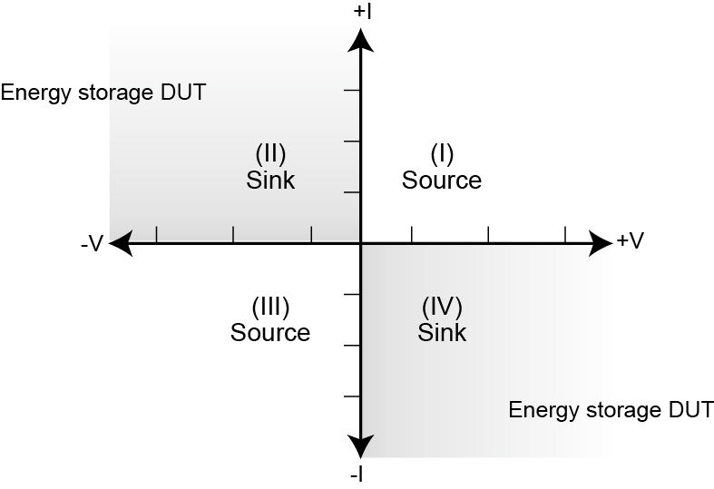

|
|
|
Source or sink
Depending on how it is programmed and what is connected to the output (load or source), the instrument can operate in any of the four quadrants. The four quadrants of operation are shown in the continuous operating boundaries figures. When operating in the first (I) or third (III) quadrant, the instrument is operating as a source (V and I have the same polarity). As a source, the instrument is delivering power to a load.

When operating in the second (II) or fourth (IV) quadrant, the instrument is operating as a sink (V and I have opposite polarity). As a sink, it is dissipating power rather than sourcing it. An external source or an energy storage device, such as a capacitor or battery, can force operation in the sink region.
Copyright (c) 2007-2012, Keithley Instruments, Inc. All rights reserved.